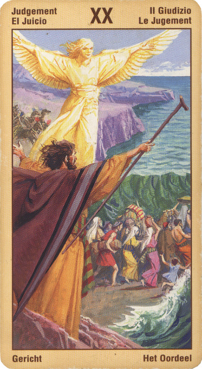

Суд
Смысл карты: в твою жизнь входит новое. Жизнь приобретает новое измерение. Ты более не “отдельно взятый” индивид, а часть Всеединства, проводник и передатчик космической энергии. Вслушайся же внимательнее в ее сигналы, в глас небесной трубы: теперь ты – посланник Божий, орудие высших сил. Постарайся же понять смысл возложенной на тебя задачи и выполнить ее с честью.
Значение: В практическом плане для человека творческого (артиста, поэта, художника) эта карта в прямом положении означает наступление нового периода вдохновения, активной работы, возможно, поиск новых форм. Вообще же она часто означает прилив новых сил, открытие “второго дыхания”, переход в новое качество. В сочетании с другими картами успеха может означать реализацию творческих планов – выход книги, открытие выставки, завершение проекта.
Это призыв к переменам и обновлению - призыв возродиться к новой жизни, которая будет более полной, чем ваша собственная и более полно будет соответствовать самому смыслу существования. Вероятно, вы подошли к перекрестку своей жизни и теперь вам нужно принять решение, которое поведет эту жизнь в новом направлении.
На карте Суда изображается Воскресение, то есть момент возрождения и освобождения чего-то, долго бывшего подавленным или скрытым; это выход истинного, Божественного начала из темницы к свету. Таким образом, значение у этой карты как раз очень благоприятное. Она олицетворяет важный, решительный шаг на пути становления личности, удачное завершение очередного этапа ее алхимической трансформации, то есть превращения низшей материи в высшую.
На бытовом уровне эта карта также означает освобождение - от каких-то забот или от вредного человека, от "лишних" качеств вроде застенчивости, боязливости и т.п.
Астрологически карта связывается с планетой Плутон, энергия которого, приобретенная им во время дисгармоничного состояния разрушения старого, дает возможность начать все сначала. Эта та внутренняя энергия, которая способна вознести наши помыслы до их реализации в мире и которая, базируясь на понятии смерти, разрушает все никчемное старое.
Пробуждение и Суд над собой есть субъективный уход во внутренний мир, максимальная отстраненность от мира внешнего и воплощение только тех идей, которые способен контролировать разум. Взаимодействие Солнце и Луны - тяготения универсально-женского и универсально-мужского начала - является тем вечным двигателем, который устанавливает непрерывность самостоятельного движения замыкающейся на себя системы инь и ян, образующей гармонию дао и дающей возможность всякого воплощения.
Двадцатый аркан- Суд - это духовное возрождение человека, искупление прошлого, раскаяние и прощение, восстановление сил, пробуждение и обновление, высвобождение доселе скрытых возможностей, познание великих взаимосвязей.
В прямом положении карта означает улучшение здоровья и рост доброжелательства. Решение начать новое дело, которое изменит жизнь к лучшему. Радость - благодаря осуществлению мечты.
Может означать также и такую ситуацию, когда после долгого застоя, наконец, пришли перемены к лучшему. Награда, повышение зарплаты, отдых после долгого труда. Словом - достижение цели.
Удачное поступление в учебное заведение, удачное прохождение военной службы. Сейчас все в жизни - за вас. Главное - не бояться!!!
В перевернутом положении – творческий кризис, застой, неудача или задержка с книгой, пьесой, проектом. Или, для людей обычных, – сохранение привычного состояния, неизменность, покой (“а на кладбище все спокойненько...”).
В бизнесе эта карта обещает благополучие кинематографистам, поэтам и прочим людям, бизнесом в прямом смысле слова не занимающимся; настоящим же бизнесменам обещает скорее большие хлопоты – и дает совет нанять (спонсировать) людей искусства, чтобы они создали имидж его бизнесу.
В перевернутом положении карта предостерегает: не тяните с принятием решения, вам все равно этого не избежать! Промедление грозит утратами. В личных делах карта может символизировать разлуку или даже развод.